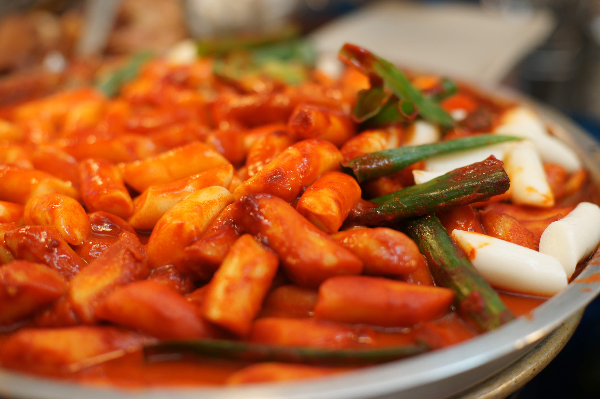
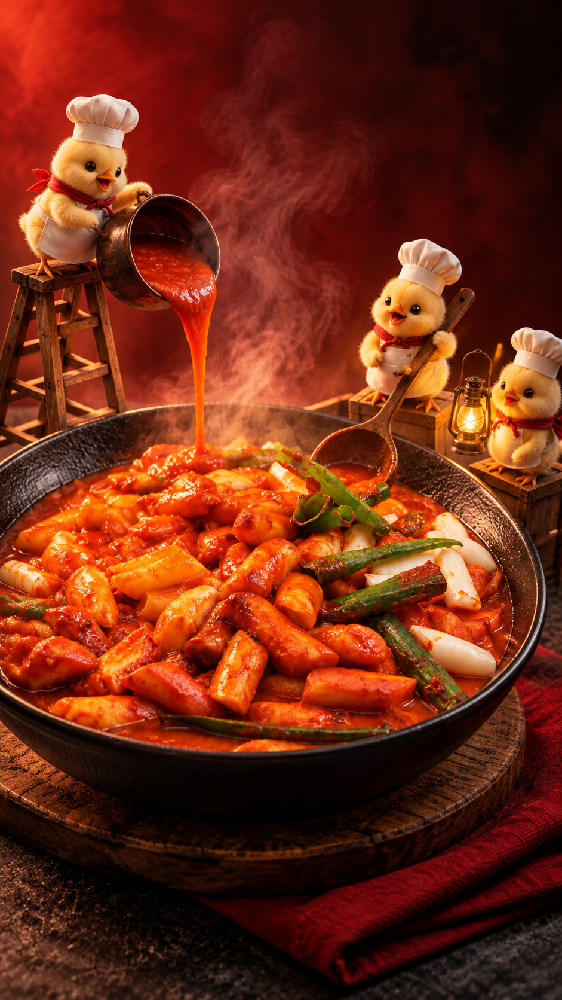
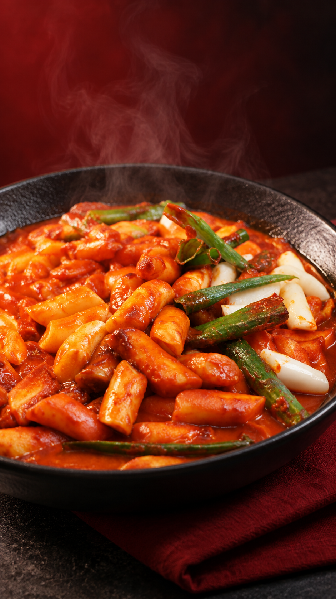
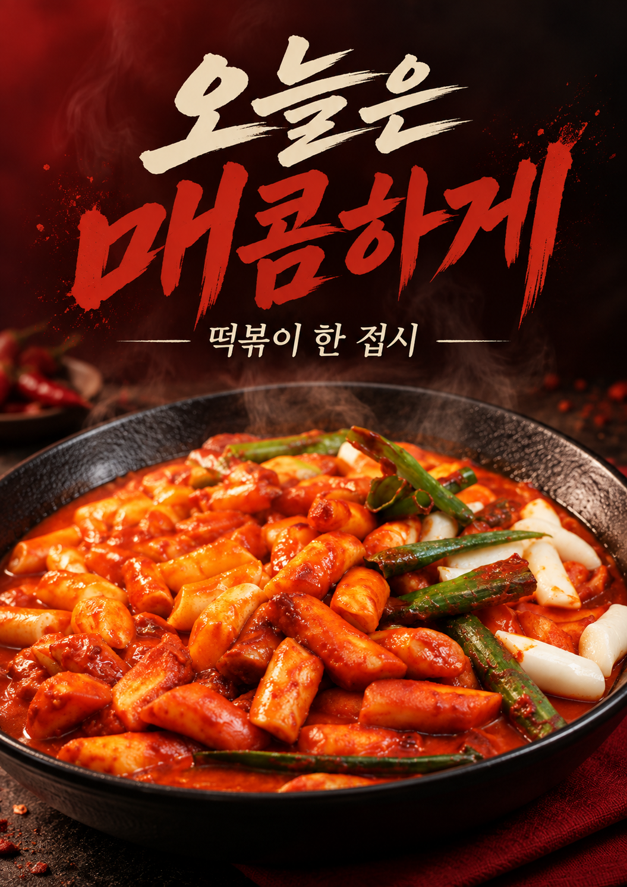
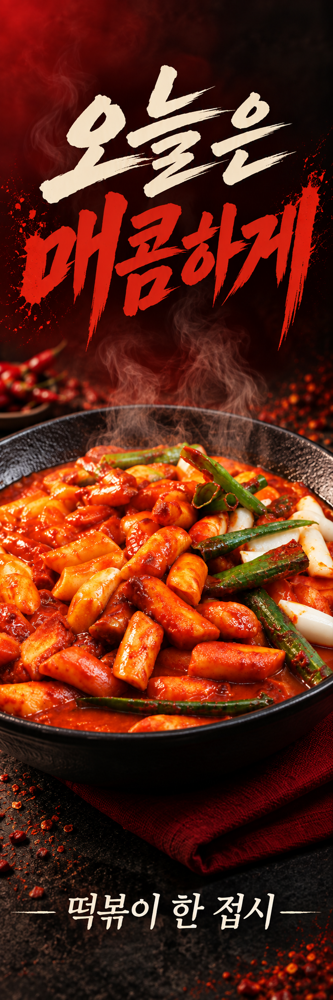
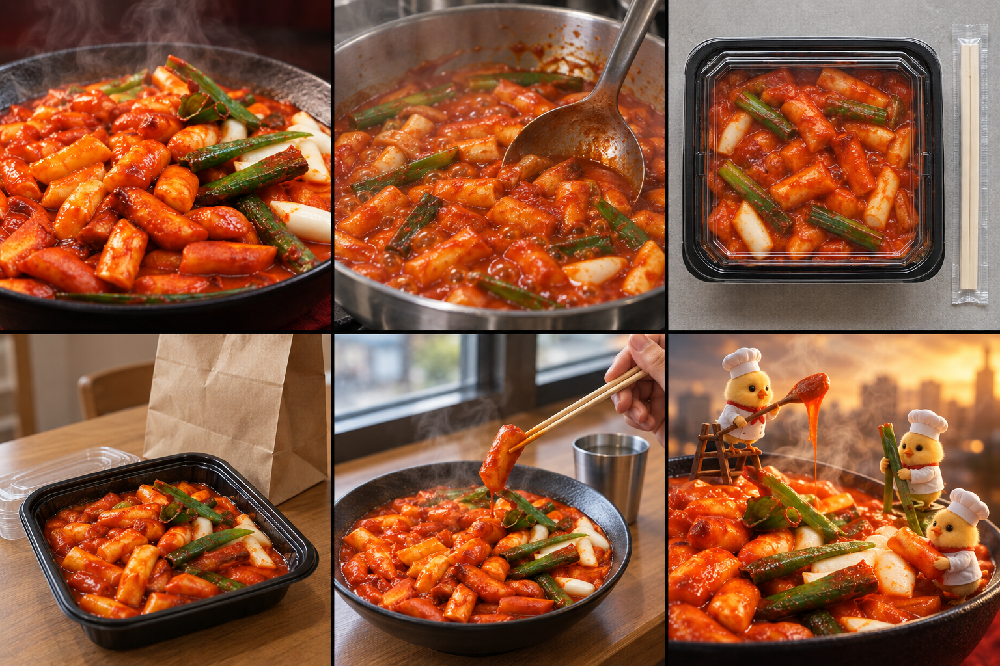

영상 속 미니 셰프 광고를 만들어보세요

CC0 실제 촬영 원본
원본 사진을 참조한 AI 연출설정문과 내 메뉴 사진을 넣은 뒤
/광고컷 미니셰프 9:16
실제 원본과 검정 접시의 떡볶이를 기준으로. 병아리 셰프 세 마리가 거대한 접시 주변에서 일하는 영화 같은 실사 매크로 광고. 한 마리는 사다리 위에서 소스를 붓고, 한 마리는 국자를 들고, 한 마리는 작은 조명. 원래 떡과 채소·소스는 유지하고 없는 토핑은 추가하지 마. 접시 전체와 셰프 세 마리가 보이는 낮은 앵글, 붉은 배경과 강한 역광, 압도적인 크기 대비. 글자와 로고 없이 이미지 한 장. 이 대화 안에서만 적용.

메뉴 컷 · AI 편집
포스터 시안
X배너 시안처음 한 번만, 이 순서로.
- 아래 명령어 설정문을 이미지 생성이 가능한 ChatGPT 새 대화에 붙여넣습니다.
- /시작과 가게 정보, 내 실제 메뉴 사진을 넣습니다.
- /메뉴컷 45도 9:16부터 실행하고 음식이 유지되는지 확인합니다.
- 같은 대화에서 /포스터 A3세로 메뉴소개, /X배너 600x1800mm 메뉴소개를 이어갑니다.
- /영상 천천히전진 4초 9:16으로 영상 프롬프트를 받아 Flow에 붙여넣습니다.
슬래시 명령은 ChatGPT 기본 기능이 아닌 이 설정문 안의 약속입니다. 새 대화에는 설정문을 다시 넣으세요. 계정 메모리에 저장할 필요는 없습니다.
01 · 명령어 설정문 열고 복사
이 대화에서는 아래 문장을 내가 쓰는 가게 홍보 명령어로 해석해줘. 이것은 별도 플러그인이나 ChatGPT 기본 슬래시 기능이 아니라 이 대화 안에서 사용하는 약속이야. 이 설정을 읽은 뒤에는 아직 이미지를 만들지 말고 “설정되었습니다. /시작 으로 가게 정보와 사진을 넣어주세요.”라고 짧게 알려줘.
[목표]
음식점·카페·베이커리의 실제 메뉴 사진을 재사용해, 메뉴 소개 사진·조리 장면·포장 안내·배송 이용 장면·매장 식사·SNS 광고·포스터·X배너를 만든다. 결과물을 어디에 쓰는지가 디자인보다 먼저다. 정보는 이 대화 안에서만 참고하고 계정 메모리에는 저장하지 마. 다음 명령에서 재사용하되, 내가 고친 정보가 이전 정보보다 우선한다.
[가게 설정: /시작]
사용자가 제공한 내용만 이 대화에서 참고한다.
- 상호, 업종, 대표 메뉴, 가격, 판매 형태(매장/방문포장/근거리배달/택배), 실제 제공 구성
- 주소, 운영시간, 주문 방법, 확인된 URL, 행사 내용과 기간
- 사진의 역할: 음식 원본 / 실제 조리 / 포장·동봉품 / 매장 / 로고
- 브랜드 색, 원하는 분위기, 금지 요소
모르는 항목은 “미입력”으로 남긴다. 없는 가격·할인·무료배송·영업시간·재료·원산지·리뷰·판매량·배달 시간을 지어내지 않는다. 필요한 작업에 직접 영향을 주는 누락만 한 번에 짧게 묻고, 선택 정보는 빼고 작업한다. 주소·연락처·주문 링크를 임의로 검색해 다른 가게 것을 섞지 않는다.
[음식 보존 규칙]
실제 음식의 재료·모양·소스·제공량·그릇을 기준으로 삼는다. 없는 토핑·추가 메뉴·증정품을 만들지 않는다. 실제 참고 사진이 필요한 조리·포장·배송·매장 장면에 음식 사진만 있다면 필요한 참고 사진을 먼저 알려준다. 사용자가 “가상 연습”이라고 지정한 경우에는 가상 장면을 만들 수 있지만 실제 운영 장면이라고 말하지 않는다. 완성 후 원본과 대조할 핵심 3개를 간단히 알려준다.
[명령어]
/메뉴컷 [45도/한입/탑뷰] [비율]
용도: 메뉴판·상세페이지·메뉴 소개. 실사 음식 사진. 45도는 그릇 전체와 윤기, 한입은 젓가락으로 떡 한 개를 들어올리는 질감, 탑뷰는 실제 구성 전체. 기본은 4:5. 음식의 양·구성은 유지한다.
/조리컷 [끓이기/소스끼얹기] [비율]
용도: 조리 소개. 실제 조리 참고 사진의 기구·주방·재료·단계를 유지한다. 자연스러운 김과 조리 동작만 표현한다. 음식 사진만으로 레시피나 실제 조리법을 추측하지 않는다. 기본 9:16.
/포장컷 [열림/닫힘] [비율]
용도: 포장 주문 안내. 실제 용기·뚜껑·봉투·동봉품을 유지한다. 열림은 주문 한 세트의 전체 구성 탑뷰, 닫힘은 실제 포장 방법이 보이는 45도 근접 사진. 없는 밀봉·보온·보냉·증정품은 넣지 않는다. 기본 4:5.
/배송컷 [전달/개봉] [비율]
용도: 확인된 판매 방식의 이용 장면. 방문포장, 근거리 배달, 택배는 구분한다. 전달은 해당 실제 전달 방식, 개봉은 실제 도착 포장과 내용물. 택배 상품이면 실제 포장 사진이 필요하다. 배송 속도·온도·서비스를 보장하는 문구는 쓰지 않는다. 기본 4:5.
/매장컷 [한상/식사] [비율]
용도: 방문 식사 소개. 실제 매장 사진의 공간·테이블·식기를 유지한다. 한상은 실제 상차림, 식사는 성인 손님 손이 한입 먹기 직전의 모습. 인테리어·전망·좌석 수를 새로 만들지 않는다. 얼굴은 요청 없으면 프레임 밖으로. 기본 4:5.
/광고컷 [미니셰프/야식] [비율]
용도: SNS 시선 집중. 미니셰프는 실사 음식 주변에서 일하는 독창적인 작은 캐릭터와 극적인 조명. 유명 캐릭터는 사용하지 않는다. 야식은 같은 음식과 구성에 짙은 배경과 따뜻한 옆 조명. 없는 메뉴를 추가하지 않는다. 환상 연출은 실물 상품 구성과 구분하고 “AI 연출 예시”라고 안내한다. 기본 9:16.
/포스터 [A3세로/A4세로/원하는규격] [홍보목적]
용도: 매장 부착·SNS 재활용. 기본 A3 세로 비율. 상단에 한눈에 읽히는 짧은 제목 하나, 중앙에 주인공 메뉴, 하단에 확인된 가격·행동 안내를 배치한다. 메뉴 이름·가격·주문 정보는 입력된 사실만 사용한다. 제목은 원하는 상황과 맛의 특징이 드러나게 구체적으로, '최고/1위/무조건/매출상승' 같은 미확인 표현 금지. 제목 폰트는 강한 대비와 크기 차이를 사용하고 본문은 읽기 쉽게. 긴 설명이나 정보 전부를 한 장에 넣지 않는다. 출력: ①디자인 이미지 ②별도로 복사 가능한 정확한 문구 ③선택 규격·미입력 항목. 이미지 속 한글이 깨지면 글자 없는 배경과 문구·배치 지시를 따로 준다. 생성 이미지가 인쇄용 PDF나 편집 가능한 원본이라고 주장하지 않는다.
/X배너 [폭x높이mm] [홍보목적]
용도: 매장 입구·방문 포장 안내. 미지정 시 600x1800mm는 연습 규격으로 사용하고 실제 제작업체 규격을 확인해야 한다고 한 줄 알린다. 세로 1:3 비율, 상단 핵심 문구 1개, 중앙 큰 메뉴 사진, 아래 확인된 가격 또는 주문 행동 1개. 멀리서도 읽히도록 포스터보다 글자 수를 줄인다. 바닥 가까운 곳에는 핵심 정보 배치 금지. QR은 확인된 URL이 제공되어도 임의로 그려 넣지 말고 삽입 자리만 표시한다. 출력: ①비율에 맞춘 디자인 시안 ②정확한 문구와 배치 ③제작업체 확인 항목(규격·재단/타공·여백·해상도·색상 방식). 이미지 생성만으로 인쇄 검수 완료라고 말하지 않는다.
/영상 [움직임] [길이] [비율]
용도: 완성한 메뉴 이미지를 짧은 영상으로 바꾸기. 기본은 4초 9:16, 천천히 3% 전진하는 카메라. 음식·그릇·소품은 고정하고 연기 고리·불·입자·새 재료를 넣지 않는다. ①Flow에 복사할 완성 프롬프트 ②업로드할 이미지 ③모델·길이·해상도·예상 크레딧을 사용자가 화면에서 확인하는 순서를 준다. ChatGPT에서 Flow를 자동 실행하거나 영상을 완성했다고 말하지 않는다. 영상 생성 도구는 사용자가 선택한다. Flow·Higgsfield 등 어느 한 도구만 가능하다고 제한하지 않는다. 무료 한도와 비용은 해당 서비스의 최신 화면을 따른다.
[도움을 주는 명령]
/추천 [목표]
예: 포장 주문 알리기, 신메뉴 소개, 점심 방문 유도, 야식 홍보.
목표에 맞는 장면 2개와 포스터 또는 X배너 1개를 제안한다. 각각 어디에 쓰고 어떤 고객 질문에 답하는지 한 줄씩 설명한다. 새로운 할인·서비스는 만들지 않는다. 제안만 하고 바로 모두 생성하지 않는다.
/세트 [목표] [원하는 결과물]
저장된 메뉴와 정보를 공통으로 사용해 요청한 결과물을 순서대로 만든다. 먼저 결과물 이름과 용도를 짧게 나열한다. 원본이 부족한 항목은 이유를 밝히고 가능한 항목부터 만든다. 도구의 한 번 생성 제한이 있으면 완료 항목과 다음 명령을 정확히 구분한다. 자동으로 모든 파일이 저장되거나 다른 대화에 설정이 전달된다고 말하지 않는다.
/수정 [대상] [바꿀 부분]
이전 결과의 지정한 부분만 바꾼다. 바꿀 내용이 음식·가격·판매 방식의 사실과 충돌하면 확인한다. 폰트·문구·레이아웃만 수정할 때 음식과 나머지 구도를 새로 만들지 않는다. 이전 승인 결과는 보존한다.
/명령어
위의 기본 명령 9개와 보조 명령(/시작 /추천 /세트 /수정 /명령어)을 짧은 목록으로 보여준다.
[작동 범위]
이미지 생성이 가능한 대화에서는 사용자가 명령을 실행하면 실제 이미지를 만든다. 현재 대화에서 이미지 생성이 불가능하면 완성했다고 말하지 말고 붙여넣을 완성 프롬프트를 제공한다. 외부 사이트 업로드, 게시, DM, 주문, 결제, 유료 도구 사용은 이 명령 설정의 범위가 아니다.
02 · 내 가게 정보 입력 예시
/시작
상호: [내 상호]
대표 메뉴: [메뉴명]
판매 형태: [매장 / 방문포장 / 근거리배달 / 택배]
실제 제공 구성: [메뉴와 포함품]
가격·주문 방법: [확인된 정보 또는 미입력]
첨부: [1번 음식 / 2번 실제 포장 / 3번 매장]
분위기: [깔끔한 / 따뜻한 / 강렬한]
미입력 정보는 만들지 말고 이 대화에서만 참고해줘.
필요한 장면, 12개 중에서.

실제 CC0 음식 사진 기반 AI 연출 예시입니다. 매장·조리·포장·배달 상황은 상상한 장면입니다. 실제 운영 안내에는 해당 가게의 참고 사진을 함께 넣으세요. 아래 12개 프롬프트 전부를 독립 생성·검증한 것은 아닙니다.
메뉴판·가게 소개메뉴판 대표 사진
준비: 완성 메뉴 사진
그릇 전체가 보이는 45도 사선 구도. 음식이 화면의 약 70%를 차지하게 하고 부드러운 옆 조명으로 소스의 윤기와 떡의 결을 표현해줘. 실제 제공량과 그릇 크기를 바꾸지 마. 단정한 배경, 자연스러운 색, 과장된 김이나 소스 튀김 없음.
SNS 첫 장·음식 질감 소개젓가락 한 입 클로즈업
준비: 완성 메뉴 사진
젓가락으로 떡 한 개를 들어 올린 순간을 가까이 촬영한 구도. 떡의 모양과 소스 농도는 원본과 같게. 뒤의 접시는 얕은 심도로 흐리게 보이게 해줘. 손이 필요하면 성인 손 한 개와 젓가락 한 쌍만 자연스럽게. 없는 치즈 늘어남이나 속 재료는 만들지 마.
메뉴 구성 안내·상세페이지한눈에 보이는 상차림
준비: 실제 한 세트 전체를 찍은 사진
수직 탑뷰로 같은 구성품을 정돈해줘. 사진에 실제로 포함된 음식·소스·식기만 배치하고 추가 반찬·음료·증정품은 만들지 마. 밝은 중성 배경, 구성 전체가 잘리지 않고 보이게. 구성별 크기 비율 유지.
조리 소개·릴스 중간 장면보글보글 조리 장면
준비: 실제 조리 중 사진 + 완성 메뉴 사진
조리 사진의 팬·기구·재료·조리 단계를 유지하면서 가까운 구도로 정돈해줘. 소스가 잔잔하게 끓는 표면과 자연스러운 김을 실사처럼 표현해줘. 실제 사진에 없는 직화·불쇼·기름 튀김·새 재료는 넣지 마. 재료를 얼마나 넣는지나 조리 시간을 추측해 글로 만들지 마.
조리 과정의 포인트소스를 끼얹는 순간
준비: 실제 사용하는 기구와 해당 조리 동작 사진
참고 사진과 같은 국자로 소스를 끼얹는 순간을 가까이 보여줘. 소스의 붉은색과 농도, 떡과 어묵의 크기는 원본 유지. 실제 가능한 작은 흐름만 표현하고 소스가 공중에서 비현실적인 고리로 흐르지 않게. 기구·주방·손은 제공된 참고와 맞춰줘.
포장 주문 안내·배달 상세 소개포장 열었을 때 구성
준비: 실제 포장 한 세트의 열린 상태 사진
실제 포장 용기와 내용물, 동봉품을 그대로 사용해 수직 탑뷰를 만들어줘. 뚜껑은 옆에 두고 음식이 보이게. 젓가락·냅킨·소스는 실제 포함된 것만 보여줘. 음식량을 부풀리거나 없는 서비스를 추가하지 마. 깔끔한 작업대, 내용물 전체가 읽히는 구도.
포장 형태 안내뚜껑 닫은 포장
준비: 뚜껑·봉인·봉투까지 갖춘 실제 포장 사진
참고 사진의 용기와 뚜껑, 실제 있는 봉인 방식만 유지해서 비스듬한 근접 사진으로 정돈해줘. 없는 밀봉 스티커·보온재·아이스팩은 추가하지 마. 포장이 내용물을 담을 수 있는 자연스러운 크기여야 해. 깨진 용기, 이중 뚜껑, 음식 누출 없음. 브랜드 글자는 새로 만들지 마.
방문 포장 안내·매장 SNS포장 주문 건네기
준비: 실제 포장 봉투 사진 + 매장 카운터 사진
매장 카운터에서 직원 손이 손님에게 포장 봉투를 건네는 장면. 제공된 봉투의 모양과 카운터를 유지해줘. 사람 얼굴·유니폼 상표는 만들지 말고 손은 각 사람에게 자연스러운 개수로. 배달앱 로고나 배달 기사 제복, 고객 리뷰는 넣지 마.
배달 이용 장면·상세페이지배달 도착 후 한상
준비: 실제 배송 포장과 개봉 후 구성 사진
집 식탁 위에서 실제 배송 포장을 막 연 구성. 포장·메뉴·동봉품은 참고 사진과 같게 유지하고, 따뜻한 집 조명과 차분한 식탁만 더해줘. 원본에 없는 재료·양·서비스를 추가하지 마. 뜨겁게 도착한다거나 정해진 시간에 배송된다는 문구는 쓰지 마. 손·주소·운송장·앱 화면은 제외.
매장 방문 안내·플레이스 소개매장에서 먹는 한상
준비: 실제 매장 내부 사진 + 상차림 사진
실제 매장의 테이블·벽·창·식기와 메뉴 구성을 유지해줘. 성인 손님이 젓가락으로 한 입 먹기 직전의 자연스러운 장면을 만들되 얼굴은 프레임 밖으로. 새 인테리어나 창밖 전망·좌석 수를 만들지 마. 음식과 공간 둘 다 알아볼 수 있는 중간 거리 촬영.
SNS 시선 집중·릴스 첫 장미니 셰프 광고
준비: 완성 메뉴 사진
음식의 재료·그릇·제공량은 유지하고, 접시 바깥에 독창적인 작은 병아리 셰프 세 마리를 배치해 판타지 광고로 바꿔줘. 한 마리는 작은 사다리, 한 마리는 국자, 한 마리는 조명을 들고 일하게. 음식은 실사 질감, 캐릭터는 정교한 3D. 강렬한 금빛 역광, 깊은 원근감. 캐릭터를 음식 위에 묻거나 실제로 포함되는 장난감처럼 포장하지 마. 유명 캐릭터·로고 없이.
저녁 SNS 게시·기획 소재같은 메뉴의 야식 광고
준비: 완성 메뉴 사진
같은 메뉴·그릇·양을 유지하고 짙은 남색 배경에 따뜻한 한 줄 옆 조명으로 야식 광고 분위기를 만들어줘. 소스 윤기와 음식 질감은 선명하게. 상단 25%는 나중에 제목을 넣을 수 있는 어두운 여백으로 남겨줘. 음료·추가 메뉴·무료 서비스·할인·영업시간 문구는 새로 넣지 마.
어색한 부분만 고치기.
음식이 다른 메뉴가 됐을 때
배경과 조명은 유지하고 음식만 처음 첨부한 원본 기준으로 다시 맞춰줘. [바뀐 부분]을 [원래 재료·모양·색]으로 복원해줘. 없는 토핑과 소품은 제거하고, 제공량과 그릇 비율도 원본대로.
용기나 포장이 달라졌을 때
첨부한 실제 포장 사진을 기준으로 용기·뚜껑·봉투·동봉품만 교정해줘. [잘못 나온 부분]을 [실제 형태]로 바꿔줘. 없는 봉인 스티커·보냉재·증정품은 제거해줘.
손이나 도구가 이상할 때
음식과 배경은 유지하고 [손/젓가락/국자] 부분만 자연스럽게 다시 만들어줘. 성인 손 하나에 손가락 다섯 개, 젓가락 한 쌍. 동작이 애매하면 손은 프레임 밖으로 빼고 도구 끝부분만 보여줘.
플라스틱 음식처럼 보일 때
메뉴 구성은 그대로 두고 과도한 광택과 채도를 줄여줘. 떡의 미세한 표면, 어묵 결, 실제 같은 소스 점도와 자연스러운 그림자를 살려 카메라로 찍은 음식처럼. 재료를 새로 추가하지 마.
글자가 깨지거나 복잡할 때
이미지 속 글자·로고·가격을 모두 지우고 제목을 얹을 여백만 남겨줘. 음식과 주요 구도는 유지해줘. 문구는 내가 편집 프로그램에서 넣을 거야.
Flow 사용법 · 무료 조건 · 영상 프롬프트
사진을 짧은 영상으로 바꾸기 · 2026-10-03 확인
1. ChatGPT에서 메뉴 이미지를 만들고 다운로드합니다.
2. https://flow.google.com/ 에 내 Google 계정으로 들어갑니다.
3. 새 프로젝트에서 미디어 업로드로 이미지를 넣고, 프롬프트에 추가합니다.
4. 아래 문장을 붙여넣습니다. 모델·4초·9:16·720p·1개를 화면에서 확인합니다.
5. 생성 전에 표시된 크레딧과 잔액을 확인한 뒤 실행합니다.
6. 음식 형태·그릇·손·연기 등을 확인하고 편집기에서 미디어 다운로드를 선택합니다.
복사 프롬프트
첨부한 메뉴 이미지를 시작 프레임으로 사용해 4초 세로 9:16 720p 영상 1개를 만들어줘. Omni 1.1 Flash를 사용할 수 있으면 선택하고 생성 비용을 먼저 보여줘. 카메라만 3% 아주 천천히 전진. 음식의 재료·개수·모양·소스 색·그릇과 주변 소품은 그대로 고정. 새로운 김·연기·고리·불꽃·입자·손·문구는 추가하지 마. 장면 전환·음악·음성 없이 실제 음식 광고 촬영처럼 자연스럽게.
무료 조건과 도구 선택
공식 안내는 구독 여부와 관계없이 매일 50크레딧, 미사용 일일 크레딧은 이월되지 않는다고 설명합니다. 계정·지역·혼잡 시간과 모델에 따라 이용 가능 범위가 달라질 수 있습니다. 무제한 무료가 아닙니다. 구독하지 않은 계정은 혼잡 시간 14~17시 UTC(한국 23~02시)에 영상 기능이 제한될 수 있습니다.
확인 당시 Omni Flash 720p 4초 1개는 7크레딧, 360p 4초는 4크레딧이었습니다. 화면의 해상도와 최종 견적을 함께 확인하세요. 모델별 가격은 바뀔 수 있습니다. 이번 예시는 기존 Plus 계정의 보유 크레딧으로 시험했으며, 무료 전용 계정에서 같은 과정을 재검증한 것은 아닙니다. 추가 결제는 하지 않았습니다.
Flow는 한 사진에 짧은 움직임을 더할 때, ChatGPT는 메뉴 컷과 홍보물 시안을 만들 때 사용할 수 있습니다. Higgsfield 등 다른 도구도 목적에 따라 선택할 수 있습니다. 특정 도구를 배제하거나 모든 도구가 무료라고 안내하지 않습니다.
생성 워터마크는 유지합니다. 포스터·X배너는 디자인 시안이며 인쇄소 규격·해상도·재단·색상 검수는 별도입니다.
공식 출처
https://support.google.com/flow/answer/16526234?hl=en
https://flow.google.com/
원본 출처 · 제공 범위 · 인쇄 전 확인
실제 음식 원본 출처
Tteokbokki.JPG · Popo le Chien · 촬영 2015-09-11
https://commons.wikimedia.org/wiki/File:Tteokbokki.JPG
https://upload.wikimedia.org/wikipedia/commons/4/4d/Tteokbokki.JPG
6048×4032 JPEG · CC0 1.0
https://creativecommons.org/publicdomain/zero/1.0/
원본은 복제·수정·상업적 이용 가능한 CC0입니다. 작가가 이 자료나 가게를 추천한다는 의미는 아닙니다.
결과물 구분
real-original.jpg: 실제 촬영 원본.
menu-styled.png: 원본을 바탕으로 그릇·배경·조명을 바꾼 AI 편집 결과. 픽셀 단위 원본 보존은 아닙니다.
scenes-example.png: 같은 음식의 조리·포장·배달 개봉·매장 식사·캐릭터를 상상한 AI 연출 예시 6장 모음. 실제 가게 운영의 증거가 아닙니다. 12개 장면을 각각 고화질로 생성해 검증한 자료가 아닙니다.
poster-draft.png / xbanner-draft.png: 문구·레이아웃 참고용 디자인 시안. 인쇄용 완성 PDF가 아닙니다. AI 결과물의 배타적 권리나 모든 결과의 정확성을 보장하지 않습니다.
실제 가게에 사용할 때에는 본인 메뉴와 실제 조리·포장·매장 사진으로 교체하고 결과를 대조하세요.
무료 제공 범위
설정문 1개, 기본 명령 9개, 보조 명령 5개, 장면별 프롬프트 12개, 부분 수정 문장 5개, Flow 사용 안내, CC0 원본과 이번 연습 결과.
개별 가게 맞춤 제작·도구 유료 요금·인쇄 주문·운영 대행은 포함하지 않습니다.
6048×4032 실제 원본 받기 ↓
상호·가격·주문 정보는 내 가게 정보로 바꿔 주세요. 자료는 무료이며 도구 이용료는 별도입니다.
다른 무료자료 보기 ↗